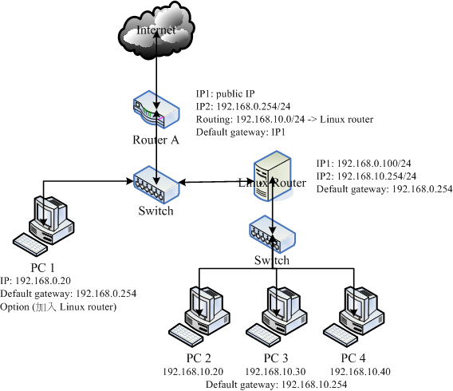
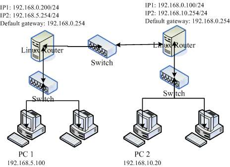
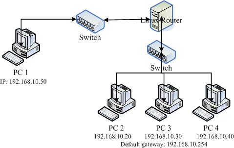
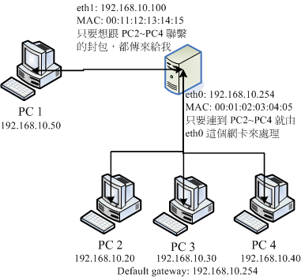

| |
最近升级日期：2006/08/30
本文已不再维护，升级文章请参考这里
|
我们在 网络基础
里面提到 路由 (route) 是一个重要的概念，他可以控制我们的数据封包的走向！
此外，如果同一个网域里面有太多的计算机数量需要来广播的话，效能一定不会太好，所以才会有
Netmask 对吧！今天我们换个角度来想一想，如果说我的网域内真的有太多的计算机数量了，
那么将整个网域切割成较小的数个子网域 (Subnet) 会是一个比较好的作法，不过，
因为网域与网域之间的封包不可以直接互通数据，所以这个时候我们就需要使用
Router (路由器) 来帮忙封包的传送了！
|
 路由 路由
我们在 网络基础里面谈到过 路由的相关概念，
他最大的功能就是在帮我们规划网络封包的传递方式与方向。
至於路由的观察则可以使用 route 或者是
netstat 来查阅与配置。
好了，那么路由的形式有哪些？您又该如何确认路由是否正确呢？
路由表
如同前面网络基础谈到的， 每一部主机都有自己的路由表，
也就是说，您必须要透过你自己的路由表来传递你主机的封包到下一个路由器上头。
若传送出去后，该封包就得要透过下一个路由器的路由表来传送了，此时与你自己主机的路由表就没有关系啦！
所以说，如果网络上面的某一部路由器配置错误，那.....封包的流向就会发生很大的问题。
我们就得要透过 traceroute
来尝试了解一下每个 router 的封包流向罗。
OK！那你自己主机的路由表到底有哪些部分呢？我们以底下这个路由表来说明：
[root@linux ~]# route -n
Kernel IP routing table
Destination Gateway Genmask Flags Metric Ref Use Iface
192.168.1.0 0.0.0.0 255.255.255.0 U 0 0 0 eth0 <== 1
127.0.0.0 0.0.0.0 255.0.0.0 U 0 0 0 lo <== 2
0.0.0.0 192.168.1.2 0.0.0.0 UG 0 0 0 eth1 <== 3
|
首先，我们得知道在 Linux 系统下的路由表 是由小网域排列到大网域，
例如上面的路由表当中，路由是由『 192.168.1.0/24 --> 127.0.0.0/8 --> 0.0.0.0/0 (默认路由) 』来排列的。
而当主机的网络封包需要传送时，就会查阅上述的三个路由守则来了解如何将该封包传送出去。
你会不会觉得奇怪，为什么会有这几个路由呢？其实路由表主要有这几种情况来设计的：
- 依据介面而存在的路由：
例如 192.168.1.0/24 这个路由的存在是由於鸟哥的这部主机上面拥有 192.168.1.11 这个 IP 的关系！
也就是说，你主机上面有几个网络介面的存在时，该网络介面就会存在一个路由才对。
所以说，万一你的主机有两个网络介面时，例如 192.168.1.11, 192.168.2.11 时，那路由至少就会有：
[root@linux ~]# route -n
Kernel IP routing table
Destination Gateway Genmask Flags Metric Ref Use Iface
192.168.1.0 0.0.0.0 255.255.255.0 U 0 0 0 eth0
192.168.2.0 0.0.0.0 255.255.255.0 U 0 0 0 eth1
.....以下省略.....
|
- 手动或默认路由(default route)：
你可以使用 route 这个命令手动的给予额外的路由配置，例如那个默认路由 (0.0.0.0/0) 就是额外的路由。
使用 route 这个命令时，最重要的一个概念是：『你所规划的路由必须要是你的装置
(如 eth0) 或 IP 可以直接沟通 (broadcast) 的情况』才行。举例来说，以上述的环境来看，
我的环境里面仅有 192.168.1.11 及 192.168.2.11 ，那我如果想要连接到 192.168.100.254 这个路由器时，
下达：
[root@linux ~]# route add -net 192.168.100.0 \
> netmask 255.255.255.0 gw 192.168.100.254
SIOCADDRT: Network is unreachable
|
看吧！系统就会回应没有办法连接到该网域，因为我们的网络介面与 192.168.100.0/24 根本就没有关系嘛！
那如果 192.168.100.254 真的是在我们的实体网络连接上，那其实你应该是这样做：
[root@linux ~]# route add -net 192.168.100.0 \
> netmask 255.255.255.0 dev eth0
[root@linux ~]# route -n
Kernel IP routing table
Destination Gateway Genmask Flags Metric Ref Use Iface
192.168.100.0 0.0.0.0 255.255.255.0 U 0 0 0 eth0
192.168.1.0 0.0.0.0 255.255.255.0 U 0 0 0 eth0
0.0.0.0 192.168.1.2 0.0.0.0 UG 0 0 0 eth1
|
这样你的主机就会直接用 eth0 这个装置去尝试连接 192.168.100.254 了！
另外，上面路由输出的重点其实是那个『Flags 的 G 』了！因为那个 G
代表使用外部的装置作为 Gateway 的意思！而那个 Gateway (192.168.1.2) 必须要在我们的已存在的路由环境中。
这可是很重要的概念喔！ ^_^
- 动态路由：
除了上面这两种可以直接使用命令的方法来添加路由守则之外，
还有一种透过路由器与路由器之间的协商以达成动态路由的环境，
不过，那就需要额外的软件支持了，例如： zebra (http://www.zebra.org/) 或 CentOS 上面的
Quagga (http://www.quagga.net/) 这几个软件了！
事实上，在 Linux 的路由守则都是透过核心来达成的，
所以这些路由表的守则都是在核心功能内啊！也就是在内存当中喔！ ^_^
IP Alias
的测试用途
我们在 Linux 常用命令里面谈过 eth0:0 这个装置吧？
这个装置可以在原本的 eth0 上面模拟出一个虚拟介面出来，以让我们原本的网络卡具有多个 IP ，
具有多个 IP 的功能就被称为 IP Alias 了。而这个 eth0:0 的装置可以透过
ifconfig 或
ip 这两个命令来达成，
关於这两个命令的用途请翻回去之前的章节阅读，这里不再浪费篇幅啊！
那你或许会问啊：『这个 IP Alias 有啥用途啊？』好问题！这个 IP Alias 最大的用途就是可以让你用来『应急』！
怎么说呢？我们就来聊一聊他的几个常见的用途好了：
- 测试用：
怎么说用来测试呢？举例来说，现在使用 IP 分享器的朋友很多吧，
那 IP 分享器通常使用 WWW 介面来提供配置。那这个 IP 分享器通常会给予一个私有 IP 亦即是
192.168.0.1 来让使用者开启 WWW 介面的浏览。问题来了，那你要如何连接上这部 IP 分享器呢？
嘿嘿！在不更动既有的网络环境下，你可以直接利用：
[root@linux ~]# ifconfig [device] [ IP ] netmask [netmask ip] [up|down]
[root@linux ~]# ifconfig eth0:0 192.168.0.100 netmask 255.255.255.0 up
|
来创建一个虚拟的网络介面，这样就可以立刻连接上 IP 分享器了。
- 在一个实体网域中含有多个 IP 网域：
另外，如果像是在补习班或者是学校单位的话，
由於原本的主机网络配置最好不要随便修改，那如果要让同学们大家互通所有的计算机信息时，
就可以让每个同学都透过 IP Alias 来配置同一网域的 IP ，
如此大家就可以在同一个网段内进行各项网络服务的测试了，很不错吧！
- 既有设备无法提供更多实体网卡时：
如果你的这部主机需要连接多个网域，但该设备却无法提供安装更多的网卡时，
你只好勉为其难的使用 IP Alias 来提供不同网段的连线服务了！
不过，你需要知道的是： 所有的 IP Alias 都是由实体网卡模拟来的，
所以当要启动 eth0:0 时，eth0 必须要先被启动才行。而当 eth0 被关闭后，
所以 eth0:n 的模拟网卡将同时也被关闭。这得先要了解才行，否则常常会搞错启动的装置啊！
在路由守则的配置当中，常常需要进行一些测试，那这个 IP Alias 就派的上用场了。
尤其是学校单位的练习环境当中！ ^_^！
基本上，除非有特殊需求，否则建议你要有多个 IP 时，最好在不同的网卡上面达成，
如果你真的要使用 IP Alias 时，那么如何在 启动的时候就启动 IP alias
呢？有两个简单的方法可以使用：
- 透过 /etc/rc.d/rc.local：
将『ifconfig eth0:n ....』的命令写入 /etc/rc.d/rc.local 当中，这样启动的时候就能够启动这个虚拟介面，
不过这方法有个弱点，就是当使用类似『 /etc/init.d/network restart
』的命令时，该介面可能就会被取消。
- 透过 /etc/sysconfig/network-scripts/ifcfg-eth0:0：
举例来说，你可以透过底下这个方法来创建一个虚拟装置的配置文件：
[root@linux ~]# cd /etc/sysconfig/network-scripts
[root@linux network-scripts]# vi ifcfg-eth0:0
DEVICE=eth0:0 <==相当重要！一定要与档名相同的装置代号！
ONBOOT=yes
BOOTPROTO=static
IPADDR=192.168.0.100
NETMASK=255.255.255.0
NETWORK=192.168.0.0
BROADCAST=192.168.0.255
[root@linux network-scripts]# ifup eth0:0
[root@linux network-scripts]# ifdown eth0:0
|
关於装置的配置文件内的更多参数说明，请参考连上 Internet
一文的相关说明，在此不再叙述！使用这个方法有个好处，就是当你使用『 /etc/init.d/network restart 』时，
系统依旧会使用你的 ifcfg-eth0:0 文件内的配置值来启动你的虚拟网卡喔！另外，
不论 ifcfg-eth0:0 内的 ONBOOT 配置值为何，只要 ifcfg-eth0 这个实体网卡的配置档中，
ONBOOT 为 yes 时，启动就会将全部的 eth0:n 都启动。
透过这两个简单的方法，你就可以在启动的时候启动你的虚拟介面而取得多个 IP 在同一张网卡上了。
不过依旧要注意的是，如果你的 eth0 是使用 DHCP 来取得 IP 参数的话，那么由於 ifup 及 /etc/init.d/network
这两个 script 内程序码撰写的方式，将会导致 ifcfg-eth0:0 这个配置档不会被使用到喔！
所以 当你使用 DHCP 来取得 eth0 的 IP 时，你只好使用手动方式
(用 ifconfig) 来配置你的 IP Alias 了。
重复路由的问题
很多朋友可能都有一个可爱的想法，那就是：『 我可不可以利用两张网卡，
利用两个相同网域的 IP 来添加我这部主机的网络流量』？事实上这是一个可行的方案，
不过必须要透过许多的配置来达成，若您有需求的话，可以参考网中人大哥写的这一篇：
如果只是单纯的以为配置好两张网卡的 IP 在同一个网域而已，那您可就大错特错了～
为什么呢？还记得我们在路由表守则里面提过网络封包的传递主要是依据主机内的路由表守则吧！
那如果你有两张网络卡时，假设：
- eth0 : 192.168.0.100
- eth1 : 192.168.0.200
那你的路由守则会是如何呢？理论上会变成这样：
[root@linux ~]# route -n
Kernel IP routing table
Destination Gateway Genmask Flags Metric Ref Use Iface
192.168.0.0 0.0.0.0 255.255.255.0 U 0 0 0 eth1
192.168.0.0 0.0.0.0 255.255.255.0 U 0 0 0 eth0
|
也就是说， 当要传送到 192.168.0.0/24 的网域时，都只会透过第一条守则
，也就是透过 eth1 来传出去，而不管是由 eth0 还是由 eth1 进来的网络封包都会透过 eth1
来回传，这可能会造成一些问题，
尤其是一些防火墙的守则方面，很可能会发生一些严重的错误，
如此一来，根本没有办法达成负载平衡，也不会有添加网络流量的效果！
更惨的是，还可能发生封包传递错误的情况呐！所以说，同一部主机上面配置相同网域的 IP 时，
得要特别留意你的路由守则，一般来说，
不应该配置同一的网段的不同 IP 在同一部主机上面。
例如上面的案例就是一个不好的示范啊！
路由器架设
在同一的区域网络里面可以透过广播 (broadcast) 了解到 MAC 与 IP 的解析，然后透过 MAC 对 MAC 来传送数据封包，
在不同的网域里头就得要透过路由器的帮忙。那么什么是路由器？他的主要功能是什么？
底下我们就来聊一聊！
什么是路由器
既然主机想要将数据传送到不同的网域时得透过路由器的帮忙，所以啦，路由器的主要功能就是：
『 转递网络封包』罗！
也就是说，路由器会分析来源端封包的 IP 表头，找出目标的 IP 后，透过路由器本身的路由表
(routing table) 将这个封包向下一个目标 (next hop) 传送。这就是路由器的功能。
那么路由器的功能可以如何达成呢？目前有两种方法可以达成：
- 硬件功能：例如 Cisco, IBM, 3Com 等公司都有生产硬件路由器，这些路由器内有嵌入式的操作系统，
可以负责不同网域间的封包转译与转递等功能；
- 软件功能：例如 Linux 这个操作系统的核心就有提供封包转递的能力。
高阶的路由器可以连结不同的硬件设备，并且可以转译很多不同的封包格式，通常....价格也不便宜啊！
在这个章节里面，我们并没有要探讨这么高阶的咚咚，仅讨论在以太网络里头最简单的路由器功能：
连接两个不同的网域。嘿嘿！这个功能 Linux 就可以达成了！
就如同路由表是由 Linux 的核心功能所提供的，这个转递封包的能力也是 Linux 核心所提供，
那如何启动这个封包转递呢？很简单啊，只要这样做即可：
[root@linux ~]# echo "1" > /proc/sys/net/ipv4/ip_forward
|
上面这个动作就在打开 Linux 核心的封包转递能力。你可以将上述的命令写入 /etc/rc.d/rc.local 当中，
以使 Linux 可以在启动的时候就启动封包转递的功能，
也可以透过修改 /etc/sysctl.conf 来达成启动启动封包转递：
[root@linux ~]# vi /etc/sysctl.conf
# 将底下这个配置值修改正确即可！
net.ipv4.ip_forward = 1
[root@linux ~]# sysctl -p <==立刻让该配置生效
|
sysctl 这个命令是在核心工作时用来直接修改核心参数的一个命令，更多的功能可以参考 man sysctl 查询。
不要怀疑！只要这个动作，你的 Linux 就具有最简单的路由器功能了。
而由於 Linux 路由器的路由表配置方法的不同，通常路由器规划其路由的方式就有两种：
- 静态路由：直接以类似 route 这个命令来直接配置路由表到核心功能当中，配置值只要与网域环境相符即可。
不过，当你的网域有变化时，路由器就得要重新配置；
- 动态路由：透过类似 zebra 软件的功能，这些软件可以安装在 Linux 路由器上，
而这些软件可以动态的侦测网域的变化，而直接修改 Linux 核心的路由表信息，
你无须手动以 route 来修改你的路由表信息喔！
了解了路由器之后，接下来你可能需要了解到什么是 NAT (Network Address Translation, 网络位址转译) 主机，
NAT 是啥？其实 IP 分享器就是最简单的 NAT 主机啦！嘿嘿，了解了吗？没错， NAT 可以达成 IP 分享的功能，
而 NAT 本身就是一个路由器，但 NAT 比路由器多了一个『 IP 转换』的功能。怎么说呢？
- 一般来说，路由器会有两个网络介面，透过路由器本身的 IP 转递功能让两个网域可以互相沟通网络封包。
那如果两个介面一边是公共 IP (public IP) 但一边是私有 IP (private IP) 呢？
由於私有 IP 不能直接与公共 IP 沟通其路由信息，此时就得要额外的『 IP 转译』功能了；
- Linux 的 NAT 主机可以透过修改封包的 IP 表头数据之来源或目标 IP ，让来自私有 IP
的封包可以转成 NAT 主机的公共 IP ，就可以连上 Internet ！
所以说， 当路由器两端的网域分别是 Public 与 Private IP 时，才需要 NAT 的功能！
NAT 功能我们会在防火墙时谈及，这个章节仅谈论一下路由器而已啊！ ^_^
何时需要路由器？
一般来说，计算机数量小於数十部的小型企业是无须路由器的，只需要利用 hub/switch 串接各部计算机，
然后透过单一线路连接到 Internet 上即可。不过，如果是超过数百部计算机的大型企业环境，
由於他们的环境通常需要考虑如下的状况，因此才需要路由器的架设：
- 实体线路之布线及效能的考量：
在一栋大楼的不同楼层要串接所有的计算机可能有点难度，那可以透过每个楼层架设一部路由器，
并将每个楼层路由器相连接，就能够简单的管理各楼层的网络；
此外，如果各楼层不想架设路由器，而是直接以网络线串接各楼层的 hub/switch 时，
那由於同一网域的数据是透过广播来传递的，那当整个大楼的某一部计算机在广播时，
所有的计算机将会予以回应，哇！会造成大楼内网络效能的问题；所以架设路由器将实体线路分隔，
就有助於这方面的网络效能；
- 部门独立与保护数据的考量：
在阅读过网络基础章节后，您就会晓得，
只要实体线路是连接在一起的，那么当数据透过广播时，你就可以透过类似
tcpdump 的命令来监听封包数据，
并且予以窃取～所以，如果你的部门之间的数据可能需要独立，
或者是某些重要的数据必须要在公司内部也予以保护时，可以将那些重要的计算机放到一个独立的实体网域，
并额外加设防火墙、路由器等连接上公司内部的网域。
路由器就只是一个设备，要如何使用端看您的网络环境的规划！上面仅是举出一些应用案例。
底下我们先就架设一个静态路由的路由器来玩一玩吧！
静态路由之路由器
假设在贵公司的网络环境当中，除了一般职员的工作用计算机是直接连接到对外的路由器来连结 Internet，
在内部其实还有一个部门需要较安全的独立环境，因此这部份的网络规划可能是这样的情况：

图一、静态路由之路由器架构示意图
以上图的架构来说，这家公司主要有两个 C class 的网域，分别是 192.168.0.0/24 及 192.168.10.0/24 ，
其中 192.168.0.0/24 是用来做为一般员工连接网际网络用的，至於 192.168.10.0/24
则是给特殊的部门用的。PC1 代表的是一般员工的计算机， PC2 及 PC3, PC4 则是特殊部门的工作用计算机，
Linux Router 则是这个特殊部门用来连接到公司内部网域的路由器。在这样的架构下，
该特殊部门的封包就能够具有基础的保护了。
由图一你也不难发现，只要是具有路由器功能的设备 (Router A, Linux Router) 都会具有两个以上的介面，
分别用来沟通不同的网域，同时该路由器也都会具有一个默认路由啊！ ^_^！
另外，你还可以加上一些防火墙的软件在 Linux Router 上，
以保护 PC2~PC4 的内部计算机呢！
在 Router A 的部分，由於他具有 Public 与 Private IP ，所以这部 Router 必须要具有 NAT 的功能，
这个未来我们再介绍。今日的重点就在於 Linux Router 那个玩意儿！在该主机下，
最好配备两张网卡，一张给 192.168.0.100，另一张给 192.168.10.254 这个 IP。
这部 Linux Router 的配置简单的要命喔！你可以这样做的：
Linux Router
在这部主机内需要有两张网卡，鸟哥在这里将他定义为：
- eth0: 192.168.10.254
- eth1: 192.168.0.100
那如何配置呢？这样做就对了：
1. 先处理 eth0
[root@linux ~]# vi /etc/sysconfig/network-scripts/ifcfg-eth0
DEVICE=eth0
BOOTPROTO=static
BROADCAST=192.168.10.255
IPADDR=192.168.10.254
NETMASK=255.255.255.0
NETWORK=192.168.10.0
ONBOOT=yes
2. 再先处理 eth1
[root@linux ~]# vi /etc/sysconfig/network-scripts/ifcfg-eth1
DEVICE=eth1
BOOTPROTO=static
BROADCAST=192.168.0.255
IPADDR=192.168.0.100
NETMASK=255.255.255.0
NETWORK=192.168.0.0
GATEWAY=192.168.0.254 <==这个配置值很重要喔！
ONBOOT=yes
3. 启动 IP 转递
[root@linux ~]# echo "1" > /proc/sys/net/ipv4/ip_forward
# 上述命令如果没有问题，将他加入 /etc/rc.d/rc.local 当中去！
4. 重新启动网络，并且观察路由
[root@linux ~]# /etc/init.d/network restart
[root@linux ~]# route -n
Kernel IP routing table
Destination Gateway Genmask Flags Metric Ref Use Iface
192.168.0.0 0.0.0.0 255.255.255.0 U 0 0 0 eth1
192.168.10.0 0.0.0.0 255.255.255.0 U 0 0 0 eth0
127.0.0.0 0.0.0.0 255.0.0.0 U 0 0 0 lo
0.0.0.0 192.168.0.254 0.0.0.0 UG 0 0 0 eth1
|
有够简单吧！这样你的 Linux Router 就 OK 了呐！接下来则是 PC2 来作为范例。
受保护的网域，以 PC2 为例：
不论你的 PC2 是哪一种操作系统，你的环境都应该是这样的：
- IP: 192.168.10.20
- netmask: 255.255.255.0
- network: 192.168.10.0
- broadcast: 192.168.10.255
- gateway: 192.168.10.254
以 Linux 操作系统为例，并且 PC2 仅有 eth0 一张网卡时，他的配置是这样的：
[root@linux ~]# vi /etc/sysconfig/network-scripts/ifcfg-eth0
DEVICE=eth0
BOOTPROTO=static
BROADCAST=192.168.10.255
IPADDR=192.168.10.20
NETMASK=255.255.255.0
NETWORK=192.168.10.0
GATEWAY=192.168.10.254 <==这个配置最重要啦！
ONBOOT=yes
[root@linux ~]# /etc/init.d/network restart
[root@linux ~]# route -n
Kernel IP routing table
Destination Gateway Genmask Flags Metric Ref Use Iface
192.168.10.0 0.0.0.0 255.255.255.0 U 0 0 0 eth0
127.0.0.0 0.0.0.0 255.0.0.0 U 0 0 0 lo
0.0.0.0 192.168.10.254 0.0.0.0 UG 0 0 0 eth0
|
Router A 的新增路由守则：
在这样的架构下，您的 PC2 已经可以连接上 Internet 了！只不过，当封包由 Internet 传回来时，
由於 Router A 并没有连接到 192.168.10.0/24
网域的路由守则，所以该封包『会遗失』喔！那就麻烦了～
所以，你的 Router A 必须要额外添加一条守则，这条守则是『将目标为 192.168.10.0/24
的封包传送给 192.168.0.100 去处理』，假设 Router A 为 Linux 系统时，那他应该要这样：
[root@linux ~]# route add -net 192.168.10.0 netmask 255.255.255.0 \
> gw 192.168.0.100
[root@linux ~]# route -n
Destination Gateway Genmask Flags Metric Ref Use Iface
192.168.10.0 192.168.0.100 255.255.255.0 UG 0 0 0 eth0
# 你应该会发现上头这一条守则存在才行！
|
如此一来，你的 Router A 及 Linux Router 之间就可以沟通，并且可以传递
192.168.10.0/24 的网域呐！
PC1 直接与 PC2 的沟通方式：
在图一当中，你会发现那个 PC1 必须要将默认路由配置为 192.168.0.254 ，
所以当 PC1 要与 PC2 沟通时，封包将由：
PC1 --> Router A --> Linux Router --> PC2
不过，在图一当中我们知道其实 PC1 与 PC2 同时接到 Linux Router 上嘛！
所以 PC1 其实可以直接加入一条路由守则，规定当 192.168.10.0/24 的封包目标时，
他可以直接传到 Linux Router 上即可，那可以这样做：
[root@linux ~]# route add -net 192.168.10.0 netmask 255.255.255.0 \
> gw 192.168.0.100
|
最后只要 PC2 使用 ping 可以连到 PC1，同样的， PC1 也可以 ping 到 PC2 的话，
就表示你的配置是 OK 的啦！嘿嘿！搞定！而透过这样的配置方式，您也可以发现到一件事，
那就是：『 路由是双向的，你必须要了解出去的路由与回来时的守则』。
举例来说，在默认的情况下 (Router A 与 PC1 都没有额外的路由配置时)，其实封包是可以由 PC2
连线到 PC1 的，但是 PC1 却没有相关的路由可以回应到 PC2 ～所以上头才会要您在 Router A
或者是 PC1 上面配置额外的路由守则啊！这样说，了了吧？ ^_^
不过这里必须要提醒的是，如果你的 Linux Router 有配置防火墙的话，
而且还有配置类似 NAT 主机的 IP 伪装技术，那可得特别留意，因为还可能会造成路由误判的问题～
上述的 Linux Router 当中『并没有使用到任何 NAT 的功能』喔！特别给他留意到！
动态路由之路由器配置：zebra
如前所述，系统管理员可以利用 route 这个命令手动的将路由守则加入核心当中，这个方式称为静态路由。
动态路由同样是将路由守则加入核心当中，只是这个加入的动作交由软件服务 (daemon) 自动来运行，
在 Linux 上面常见的路由服务就是 zebra 这个套件所提供的。
动态路由通常是用在路由器与路由器之间的沟通，所以要让您的路由器具有动态路由的功能，
你必须要了解到对方路由器上面所提供的动态路由协议才行，这样两部路由器才能够透过该协议来沟通彼此的路由守则。
目前常见的动态路由协议有：RIPv1, RIPv2, OSPF, BGP 等等，
zebra 都有支持这些路由协议喔！
在 CentOS 上头，我们使用 quagga 这个套件来提供 zebra ，因为 quagga 是升级 zebra 而来的，
事实上，你可以说， quagga 就是 zebra 啦！赶紧安装他先：
[root@linux ~]# yum install quagga
[root@linux ~]# ls -l /etc/quagga
-rw-r--r-- 1 root root 410 Jun 2 02:38 ripd.conf.sample
-rw-r----- 1 quagga quagga 30 Aug 29 10:50 zebra.conf
-rw-r--r-- 1 root root 373 Jun 2 02:38 zebra.conf.sample
.....其他省略.....
|
这个套件所提供的各项动态路由协议都放置到 /etc/quagga/ 目录内，底下我们以较为简单的 RIPv2 协议来处理动态路由，
不过你得要注意的是，不论你要启动什么动态路由协议，那个 zebra 都必须要先启动才行！
这是因为：
- zebra 这个 daemon 的功能在升级核心的路由守则；
- RIP 这个 daemon 则是在向附近的其他 Router 沟通协调路由守则的传送与否。
而各个路由服务的配置档都必须要以 /etc/quagga/*.conf 的档名来储存才行，如上表我们可以发现 zebra
这个服务是有配置好了，不过 ripd 的档名却不是 .conf 结尾。所以我们必须要额外作些配置才行。
而假设我们的网络连结如下图二所示：

图二、动态路由的简易图示
这两部 Linux Router 分别负责不同的网域，且可以透过 192.168.0.0/24 这个网域来沟通。
在没有配置额外路由守则的情况下，那个 PC1 与 PC2 是无法沟通的！另外，
zebra 必须要同时安装在两部 Linux Router 上头才行，
而且我们只要配置好这两部主机的网络介面 (eth0, eth1)
后，不需要手动输入额外的路由配置喔！可以透过 RIP 这个路由协议来搞定的！
配置 zebra
我们先配置图二右手边那一部 Linux Router，关於 zebra.conf 你可以这样配置的：
1. 先配置 zebra 并且启动 zebra
[root@linux ~]# vi /etc/quagga/zebra.conf
hostname linux.router1 <==给予这个路由器一个主机名称，随便取！
password linux1 <==给予一个口令！
enable password iinux1 <==将这个口令生效！
log file zebra.log <==将所有 zebra 产生的信息存到登录文件中
[root@linux ~]# /etc/init.d/zebra start
[root@linux ~]# netstat -tunlp
Active Internet connections (only servers)
Proto Recv-Q Send-Q Local Address Foreign Address State PID/Program name
tcp 0 0 127.0.0.1:2601 0.0.0.0:* LISTEN 6422/zebra
|
仔细看，由於 zebra 这个服务的任务主要是在修改 Linux 系统核心内的路由，
所以他仅监听本机介面而已，并不会监听外部的介面才对！另外，在 zebra.conf 这个文件当中，
我们所配置的那个口令是有作用的喔！可以让我们登陆 zebra 这套软件呢！
好了，我们来查一查这个 2601 的 port 是否正确的启动的呢？
[root@linux ~]# telnet localhost 2601
Trying 127.0.0.1...
Connected to localhost.
Escape character is '^]'.
Hello, this is Quagga (version 0.98.3).
Copyright 1996-2005 Kunihiro Ishiguro, et al.
User Access Verification
Password: <==在这里输入刚刚你配置的口令啊！
linux.router1> <==在这边输入『 ? 』就能够知道有多少命令可使用
echo Echo a message back to the vty
enable Turn on privileged mode command
exit Exit current mode and down to previous mode
help Description of the interactive help system
list Print command list
quit Exit current mode and down to previous mode
show Show running system information
terminal Set terminal line parameters
who Display who is on vty
linux.router1> list
echo .MESSAGE
enable
exit
help
list
quit
show debugging zebra
show history
show interface [IFNAME]
show ip forwarding
show ip route
....其他省略....
linux.router1> show ip route
Codes: K - kernel route, C - connected, S - static, R - RIP, O - OSPF,
I - ISIS, B - BGP, > - selected route, * - FIB route
K>* 0.0.0.0/0 via 192.168.0.254, eth0
C>* 127.0.0.0/8 is directly connected, lo
C>* 192.168.0.0/24 is directly connected, eth0
C>* 192.168.10.0/24 is directly connected, eth1
linux.router1> exit
Connection closed by foreign host.
|
仔细看到，我们登陆这个 zebra 的软件之后，可以输入『help』或问号『?』， zebra
就会显示出你能够运行的命令有哪些，比较常用的当然是查询路由守则罗！
以『 show ip route 』来查阅，结果可以发现目前的介面与默认路由都被显示出来了，
显示的结果当中， K 代表以 router 这个命令直接加入核心的路由守则，C
则代表你的网络介面相关的路由守则。
事实上，如果你还想要添加额外的静态路由的话，也可以透过 zebra 而不必使用 route 命令呢！
例如想要添加 10.0.0.0/24 给 eth0 来处理的话，可以这样做：
[root@linux ~]# vi /etc/quagga/zebra.conf
# 新增底下这一行喔！
ip route 10.0.0.0/24 eth0
[root@linux ~]# /etc/init.d/zebra restart
[root@linux ~]# telnet localhost 2601
User Access Verification
Password: <==这里输入口令
linux.router1> show ip route
Codes: K - kernel route, C - connected, S - static, R - RIP, O - OSPF,
I - ISIS, B - BGP, > - selected route, * - FIB route
K>* 0.0.0.0/0 via 192.168.0.254, eth0
S>* 10.0.0.0/24 [1/0] is directly connected, eth0
C>* 127.0.0.0/8 is directly connected, lo
C>* 192.168.0.0/24 is directly connected, eth0
C>* 192.168.10.0/24 is directly connected, eth1
|
嘿嘿！立刻就会多出一笔路由的守则，而且最右边会显示 S，亦即是静态路由 (Static route) 的意思。
如此一来，我们系统管理员可就轻松多了！
配置完 zebra 之后，接下来我们可以开始看看 ripd 这个服务罗！
配置 ripd 服务
ripd 这个服务可以在两部 Router 之间进行路由守则的交换与沟通，
当然啦，如果你的环境里面有类似 Cisco 或者是其他有提供 RIP 协议的路由器的话，
那么你当然也是可以透过这个 RIP 让您的 Linux Router 与其他硬件路由器互相沟通的呐！
闲话少说，来配置 ripd 吧！
[root@linux ~]# vi /etc/quagga/ripd.conf
hostname linux.router1 <==这里是配置 Router 的主机名称而已
password linux1 <==配置好你自己的口令喔！
router rip <==启动 Router 的 rip 功能
network 192.168.0.0/24 <==针对这个网域来进行监听的动作！
network eth0 <==针对这个介面来进行监听的动作
network 192.168.10.0/24 <==针对这个网域来进行监听的动作！
network eth1 <==针对这个介面来进行监听的动作
version 2 <==启动的是 RIPv2 的服务
log stdout <==直接在萤幕输出标准输出的数据
[root@linux ~]# /etc/init.d/ripd start
[root@linux ~]# netstat -tulnp
Active Internet connections (only servers)
Proto Recv-Q Send-Q Local Address Foreign Address State PID/Program name
tcp 0 0 0.0.0.0:2602 0.0.0.0:* LISTEN 21373/ripd
|
基本上，这样就配置完成一部路由器的 RIP 动态路由协议了！在上头 ripd.conf 的配置当中，
他会主动以 eth0 及 192.168.0.0/24 这个网域的功能来进行搜索，如此一来，未来你进行任何路由守则的变动，
或者是整个网域的主机 IP 进行更动，你将不需要重新到每部 Router 上更动！
因为这些路由器会自动的升级他们自己的守则喔！嘿嘿！接下来，同样的动作请你到
图二左边那部 Linux Router 上面配置一下！
因为整个配置的流程都一样，所以这里鸟哥就省略啦！
检查 RIP 协议的沟通结果
在两部 Linux Router 都配置妥当之后，你可以登陆 zebra 去看这两部主机的路由升级结果喔！
举例来说，鸟哥登陆 图二右边那部 Linux Router 后，并且登陆 zebra ，
观察路由会是这样的情况：
[root@linux ~]# telnet localhost 2601
User Access Verification
Password: <==不要忘记了口令啊！
linux.router1> show ip route
Codes: K - kernel route, C - connected, S - static, R - RIP, O - OSPF,
B - BGP, > - selected route, * - FIB route
K>* 0.0.0.0/0 via 192.168.0.254, eth0
C>* 127.0.0.0/8 is directly connected, lo
C>* 192.168.0.0/24 is directly connected, eth0
R>* 192.168.5.0/24 [120/2] via 192.168.0.200, eth0, 00:06:48
C>* 192.168.10.0/24 is directly connected, eth1
|
如果你有看到上述的字体，嘿嘿！那就是成功啦！那个最左边的 R 代表的是透过 RIP 通讯协议所配置的路由守则啦！
如此一来，咱们的路由器配置就搞定罗～
ARP Proxy 让路由器两端在同一网域
如果你一开始设计的网络环境就是同一个 C class 的网域，例如 192.168.10.0/24 ，
后来因为某些因素必须要将某些主机搬到比较内部的环境中，例如 图一的 PC2 ~ PC4 。
然后又因为某些因素，所以你不能变更 PC2 ~ PC4 的 IP ，也就是说，有点像底下这样的图示：

图三、路由器两边是同一网域的特殊状况
初次见面～看到眼睛快要掉下来哩！怎么会两边的主机都在同一个网域内？而且还被规定不能够更改原先的 IP 配置，
.....真是一个头两个大啊～如此一来，在 Linux Router 两边要如何制作路由啊？好问题！真是好问题～
因为 OSI 第三层网络层的路由是一条一条去配置比对的，所以如果两块网卡上面都是同一个网域的 IP 时，
就会发生错误。那如何处理啊？
既然 OSI 第三层无法解决，那么可否以第二层的数据连接层来处理？看倌应该还记得 OSI 第二层最重要的就是那个 ARP 协议，
他可以用来进行 IP 与 MAC 的对应。那么由图三我们知道 PC1 要与 PC2 等主机沟通时，都需要透过 Linux Router ，
那有没有办法透过 ARP 告知整个网域内的计算机，要传送到 PC2~PC4 的封包都需要经过 Linux Router 呢？
呵呵！好想法。你可以这样想：

图四、路由器两边是同一网域的特殊状况
也就是说：
- 当 Linux Router 的 eth1 那个网域主机想要连接到 PC2~PC4 的主机时，由 Linux Router 负责接收；
- 当 Linux Router 要传送数据到 PC2~PC4 时，务必要由 eth0 来传送；
- 当 Linux Router 要传送的数据为 192.168.10.0/24 ，但并非 PC2~PC4 时，需由 eth1 传送；
- 当 Linux Router 的 eth0 那个网域主机想要连接到 PC1 时，由 Lniux Router 负责接收。
要达到 (1) 与 (4) 的要求并不难，我们可以透过 ARP Proxy 这玩意儿，啥是 ARP Proxy 呢？就是在 Linux Router
上面预先规定『 将 192.168.10.20, 192.168.10.30, 192.168.10.40 这三个 IP
的 MAC 都对应到 Linux Router 上！』由於是区域网络内，因此都是透过广播的方式达到 ARP 协议所需要的
IP 与 MAC 的对应，所以啦，每一部在 eth1 那端的主机都会『误判』那三个 IP 是 Linux Router 所拥有，
这样就能够让封包传给 Linux Router 啦！
再接下来，咱们的 Linux Router 必须要额外指定路由，配置：
- 若目标是 PC2 ~ PC4 时，该路由必须要由 eth0 发送出去才行，
- 若目标不为 PC2 ~ PC4 ，且目标在 192.168.10.0/24 的网域时，需由 eth0 发送出去才行。
也就是说，你必须要指定路由守则当中，那个 PC2~PC4 具有优先选择权，然后其他的同网域封包才由 eth1 来传送。
这样就能够达成我们所想要的结局啦！^_^！看样子似乎很难，其实配置方面还挺简单的，你可以透过 arp
以及 route 这两个命令来达成喔！
1. 先配置 ARP Proxy ，告知 eth1 所在网域 IP 与 MAC 的对应
[root@linux ~]# arp -i eth1 -s 192.168.10.20 00:11:12:13:14:15 pub
[root@linux ~]# arp -i eth1 -s 192.168.10.30 00:11:12:13:14:15 pub
[root@linux ~]# arp -i eth1 -s 192.168.10.40 00:11:12:13:14:15 pub
# 看图四的说明，我这里假设 eth1 的 MAC 是 00:11:12:13:14:15 啦！
[root@linux ~]# arp -i eth0 -s 192.168.10.50 00:01:02:03:04:05 pub
# 看图四的说明，我这里假设 eth0 的 MAC 是 00:01:02:03:04:05 啦！
[root@linux ~]# arp -n
Address HWtype HWaddress Flags Mask Iface
192.168.10.20 * * MP eth1
192.168.10.30 * * MP eth1
192.168.10.40 * * MP eth1
192.168.10.50 * * MP eth0
# 瞧！有三个 IP 都变成属於俺的 eth1 的啦！然后一个属於 eth0
2. 开始处理路由，需要清除掉 eth0 的路由，并且添加 PC2~PC4 的单机路由
[root@linux ~]# route del -net 192.168.10.0 netmask 255.255.255.0 eth0
[root@linux ~]# route add -host 192.168.10.20 eth0
[root@linux ~]# route add -host 192.168.10.30 eth0
[root@linux ~]# route add -host 192.168.10.40 eth0
# 这样就配置妥当啦！将你的路由规划好罗！
[root@linux ~]# route -n
Kernel IP routing table
Destination Gateway Genmask Flags Metric Ref Use Iface
192.168.10.20 0.0.0.0 255.255.255.255 UH 0 0 0 eth0
192.168.10.30 0.0.0.0 255.255.255.255 UH 0 0 0 eth0
192.168.10.40 0.0.0.0 255.255.255.255 UH 0 0 0 eth0
192.168.10.0 0.0.0.0 255.255.255.0 U 0 0 0 eth1
# 看到上面这一行，虽然我的两块网卡都是在 192.168.10.0/24 ，
# 不过真正针对整个网域传送的，仅有 eth1 那一块的意思！
|
瞧！这样一来，你的 PC1 就可以 ping 到 PC2~PC4 的主机了！数据的传输上面也没有问题。
这个作法是相当有帮助的呐！对於默认架构不想更动的环境来说。 ^_^！
不过，由这个案例你也可以清楚的知道， 能不能连线其实与路由的关系才大哩！
而路由是双向的，你必须要考量到这个封包如何回来的问题喔！
重点回顾
- 网络卡的代号为 eth0, eth1, eth2...，而第一张网络卡的第一个虚拟介面为 eth0:0 ...
- 网络卡的参数可使用 ifconfig 直接配置，亦可使用配置档如 /etc/sysconfig/network-scripts/ifcfg-ethn 来配置；
- 路由是双向的，所以由网络封包发送处发送到目标的路由规划，必须要考虑回程时是否具有相对的路由，
否则该封包可能会『遗失』；
- 每部主机都有自己的路由表，此路由表 (routing table) 是作为封包传送时的路径依据；
- 每部可对外 Internet 传送封包的主机，其路由信息中应有一个默认路由 (default gateway)；
- 要让 Linux 作为 Router 最重要的是启动核心的 IP Forward 功能；
- 重复路由可能会让你的网络封包传递到错误的方向；
- 动态路由通常是用在两个 Router 之间沟通彼此的路由守则用的，常见的 Linux 上的动态路由套件为 zebra ；
- arp proxy 可以透过 arp 与 route 的功能，让路由器两端都在同一个网段内；
- 一般来说，路由器上都会有两个以上的网络介面
- 事实上，Router 除了作为路由转换之外，在 Router 上面架设防火墙，亦可在企业内部再分隔出多个需要安全
(Security) 的单位数据的区隔！
课后练习
- 请问您如何将您的 eth0 这个介面修改成为 192.168.100.2 在网域 192.168.100.0/25
之内的网络参数内容？
因为 192.168.100.0/25 的 netmask 为 255.255.255.128 ，所以可以这样做：
ifconfig eth0 192.168.100.2 netmask 255.255.255.128 up
这样即可！如果尚须其他的参数，则需要以文件形式来下达，如 vi /etc/sysconfig/network-scripts/ifcfg-eth0，并修改为：
DEVICE=eth0
ONBOOT=yes
BOOTPROTO=static
IPADDR=192.168.100.2
NETMASK=255.255.255.128
NETWORK=192.168.100.0
BROADCAST=192.168.100.127
- 请手动配置 eth0:1 这个虚拟介面，使成为网络参数： 192.168.200.2, 网域在 192.168.200.0/24。
ifconfig eth0:1 192.168.200.2 up
- 如何观察路由表？
route -n 即可查阅！注意到 0.0.0.0 那个目标(default gateway)。
- 如何启动 Linux 的 IP Forward 功能？
直接以『echo "1" > /proc/sys/net/ipv4/ip_forward 』即可！
- 假设您是一个学校单位的信息管理员，学校内有 200 部计算机，奉上面大头的旨意，必须要将
200 部计算机分为 4 个 Subnet ，请问您应该如何布线(请画出示意图)？而这 4 个
Subnet 的网络参数如何选择(请自行选择)？而是否需要 Router ？如果需要的话，假设每个
Router 仅能有两个网络实体介面，那么该如何布线？(注：不要使用虚拟介面)
- 假设你想要连接到 168.95.1.1 ，那么你该如何判断你经过『多少个』节点？
可以使用 traceroute 168.95.1.1 来分析每个节点的传送信息，也可以透过 ping 168.95.1.1
所回传的那个 ttl 值判断节点数量。
- 万一您的网络有点停顿，发现可能是网络上某个节点出现问题，您应该如何确认是哪一部 Router 出问题？
就利用 traceroute 吧！
参考数据
2002/08/09：第一次完成日期！
2003/08/22：重新编辑文章，并添加重点回顾与课后练习
2006/08/21：将旧的文章移动到 此处。
2006/08/30：加入了 zebra 以及 ARP Proxy 等与 Router 比较相关的议题！
|
|